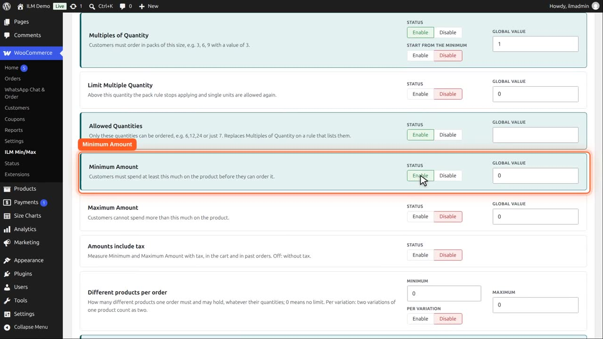
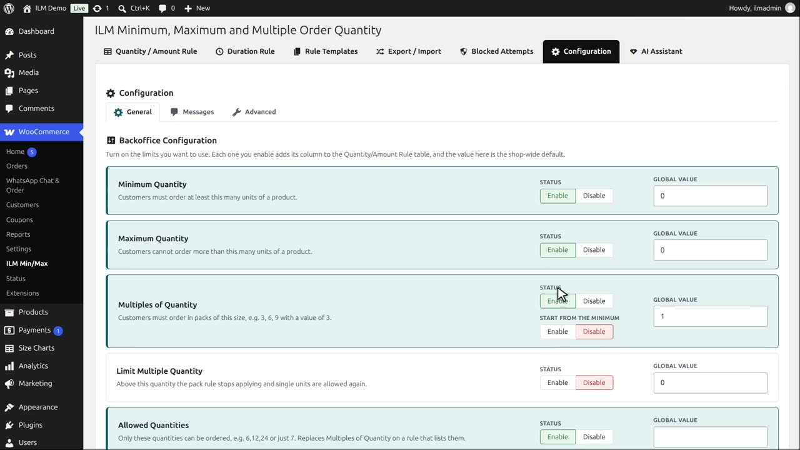
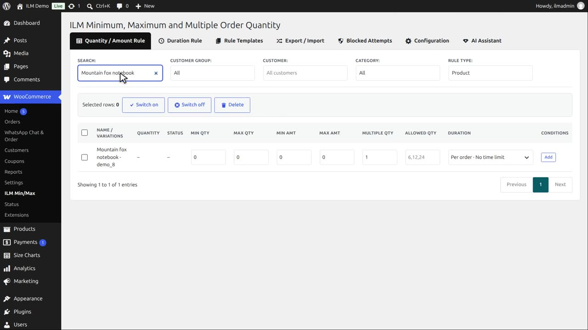
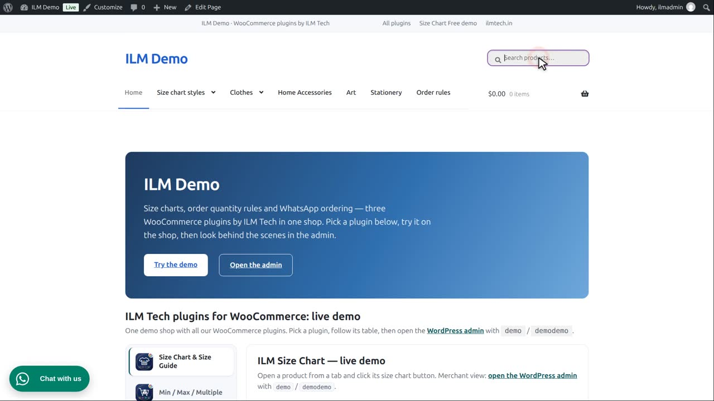
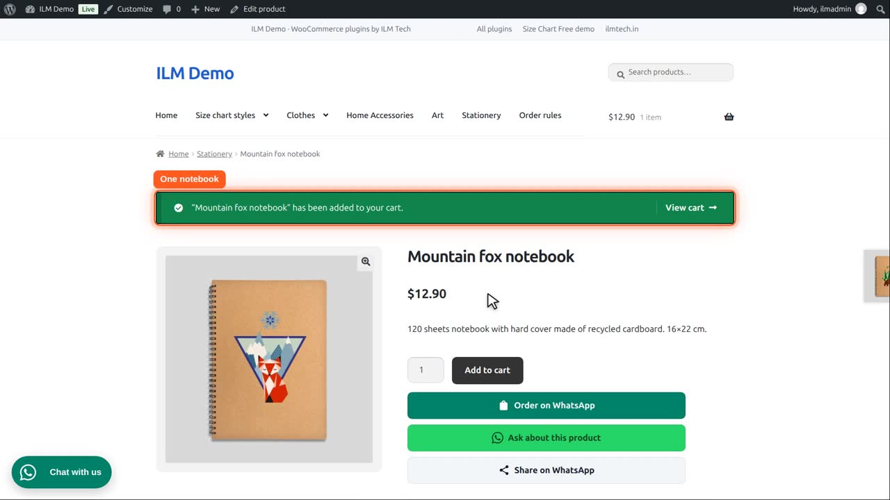
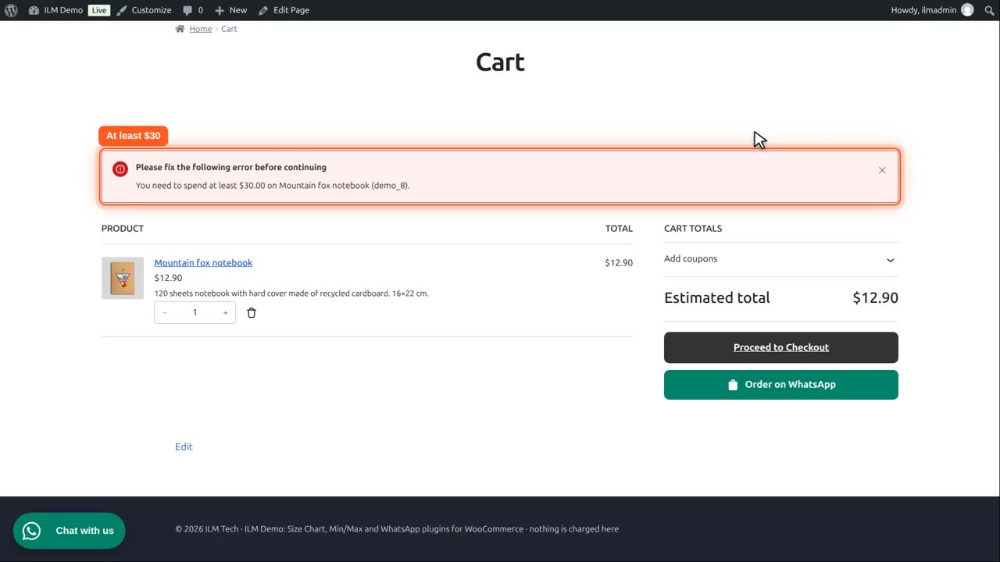
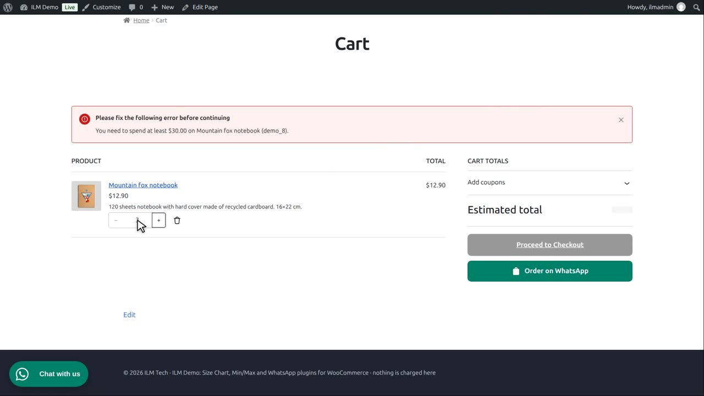
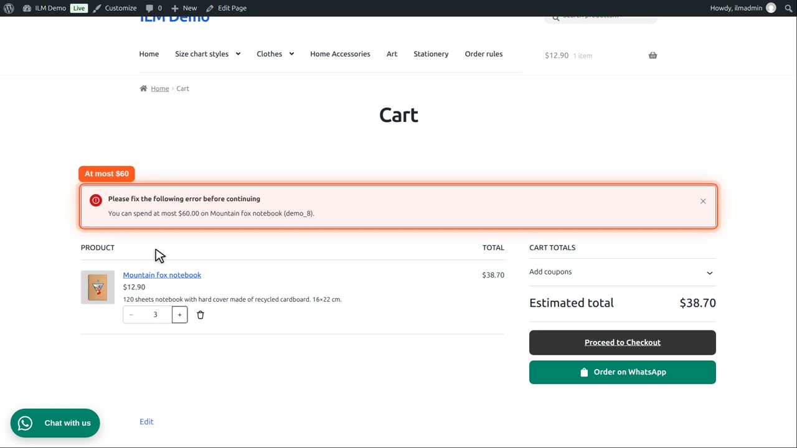
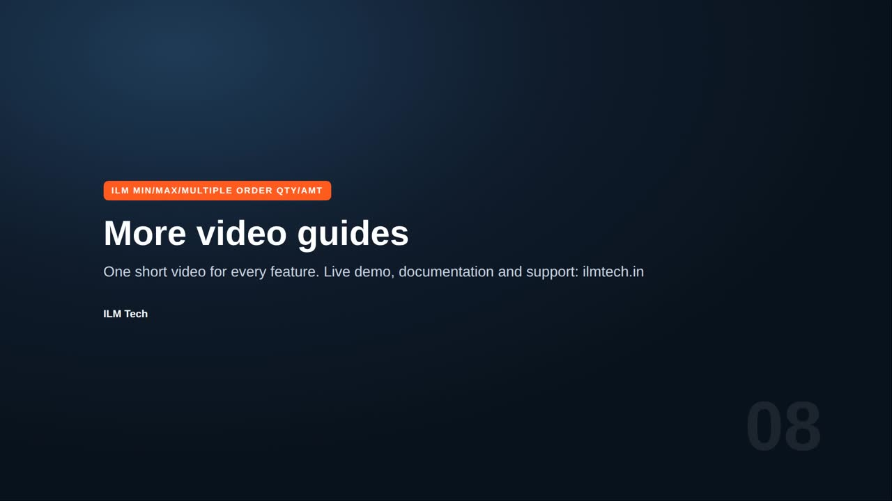

Pro add-on. This feature needs the Pro add-on. See Free and Pro.
| Setting | What it does |
|---|---|
| Minimum Amount | Customers must spend at least this much on the product (or on the category, brand, tag or user role, for those levels). |
| Maximum Amount | Customers cannot spend more than this much. Amount and quantity limits can be used together on the same rule. |
On the Configuration tab, enable Minimum Amount. It adds a Min Amt column to the rule table.

Maximum Amount is switched on the same way.

Now there is a Max Amt column too. Let us use the Mountain fox notebook, at twelve dollars ninety.

The customer must spend at least thirty dollars on it, and at most sixty. Amounts are in your shop currency.

A customer adds one notebook, twelve dollars ninety.

The cart explains that they need to spend at least thirty dollars on this product. Checkout refuses the order while the rule is broken.

They raise the quantity to three notebooks, thirty eight dollars seventy. The message is gone.

Now they try five notebooks, sixty four dollars fifty. That is more than sixty, so the cart refuses it and says they can spend at most sixty dollars.

The cart stays within the range, and checkout stays open.
